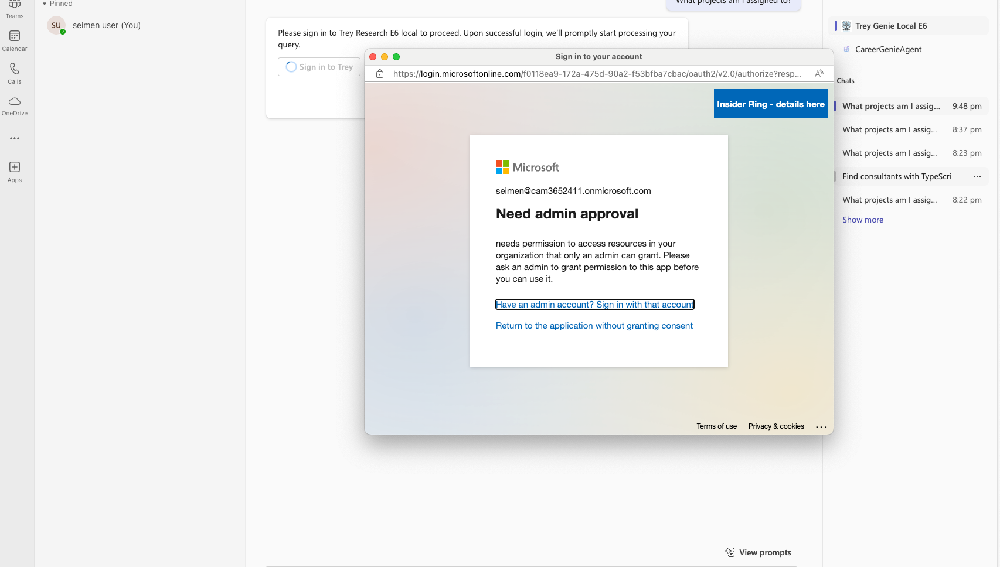
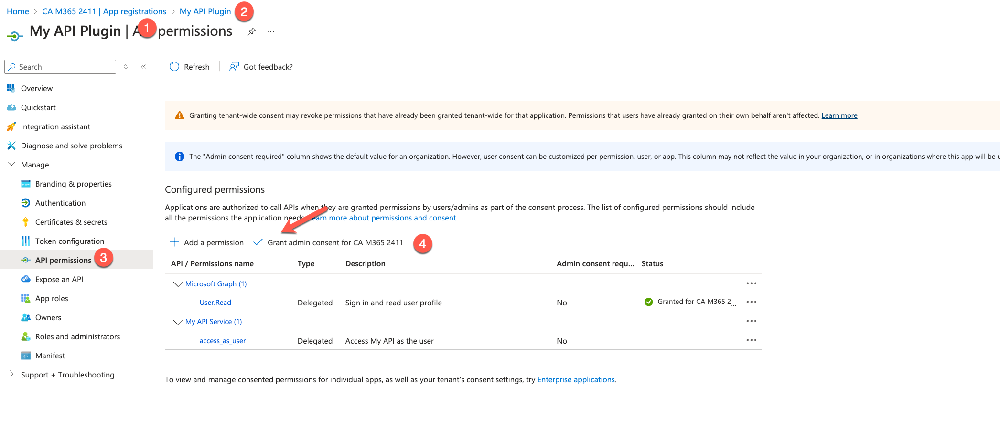

ラボ E6b - OAuth を使用した Entra ID 認証の追加（手動セットアップ）
このラボでは、Entra ID をアイデンティティ プロバイダーとして使用し、OAuth 2.0 で API プラグインに認証を追加します。
Microsoft 365 が AI モデルとオーケストレーションを提供する Declarative エージェントを構築したい場合は、これらの ラボ を実施してください
- 🏁 ようこそ
- 🔧 セットアップ
- 🧰 Declarative エージェントの基本
- 🛠️ API をゼロから構築して統合する
- 🔐 認証
- 🔌 統合
Note
このラボでは Entra ID の詳細なセットアップ手順が多く含まれます。
これらの手順の多くを自動化する新しい Agents Toolkit が利用可能です。近々、より簡略化したバージョンのラボを提供する予定です。
このラボでは、プラグインと API を保護するために使用する Entra ID アプリケーションを登録します。開始する前に、アプリ情報を安全な場所に保存してください。保存が必要な値は次のとおりです。
API Base URL:
API service Application (client) ID:
API service Directory (tenant) ID:
Authorization endpoint:
Token endpoint:
API service client secret:
API scope:
Plugin service application (client) ID:
Plugin service client secret:
Exercise 1: 永続的なデベロッパー トンネルをセットアップする（任意）
既定では Agents Toolkit はプロジェクトを起動するたびに新しいデベロッパー トンネルを作成します。そのためローカルで稼働する API にアクセスする URL も毎回変わります。通常は Agents Toolkit が必要な箇所を自動更新するため問題ありませんが、このラボでは手動設定を行うため、デバッガーを起動するたびに Entra ID と Teams Developer Portal の URL を手動で更新する必要があります。そのため、URL が変わらない永続的なデベロッパー トンネルを作成すると便利です。
永続的トンネルを設定しない場合 ▶▶▶
Agents Toolkit が提供するデベロッパー トンネルをそのまま使用してもかまいません。プロジェクトを起動したら、ターミナル タブ 1️⃣で「Start local tunnel」ターミナル 2️⃣を選択し、Forwarding URL 3️⃣をコピーします。この URL はプロジェクトを起動するたびに変わるため、アプリ登録の Reply URL（Exercise 2 Step 1）と Teams Developer Portal の URL（Exercise 5 Step 1）を手動で更新する必要があります。

Step 1: デベロッパー トンネル CLI をインストールする
以下はデベロッパー トンネルをインストールするコマンド ラインです。Developer Tunnel の完全な手順とダウンロード リンクはこちら。
| OS | Command |
|---|---|
| Windows | winget install Microsoft.devtunnel |
| Mac OS | brew install --cask devtunnel |
| Linux | curl -sL https://aka.ms/DevTunnelCliInstall | bash |
Tip
devtunnel コマンドが動作しない場合は、パスを更新するためにターミナルを再起動してください。
インストール後、ログインが必要です。Microsoft 365 アカウントでログインできます。
devtunnel user login
このラボの演習中は devtunnel コマンドを実行したままにしてください。再起動が必要になった場合は devtunnel user login を再実行してください。
Step 2: トンネルを作成してホストする
次に、Azure Functions のローカル ポート 7071 への永続的トンネルを設定します。以下のコマンドを使用し、必要に応じて "mytunnel" を任意の名前に置き換えてください。
devtunnel create mytunnel -a --host-header unchanged
devtunnel port create mytunnel -p 7071
devtunnel host mytunnel
コマンド ラインには接続情報が表示されます。

「Connect via browser」の URL をコピーし、「API Base URL」として保存してください。
Step 3: プロジェクトで動的トンネルを無効化する
ローカルでプロジェクトが実行中の場合は停止します。その後、.vscode\tasks.json を編集し、"Start Teams App" タスクを探します。"Start local tunnel" 依存関係をコメントアウトし、代わりに "Start Azurite emulator" を依存関係として追加します。最終的なタスクは次のようになります。
{
"label": "Start Teams App Locally",
"dependsOn": [
"Validate prerequisites",
//"Start local tunnel",
"Start Azurite emulator",
"Create resources",
"Build project",
"Start application"
],
"dependsOrder": "sequence"
},
Step 4: サーバー URL を手動で上書きする
env/.env.local を開き、OPENAPI_SERVER_URL の値を永続的トンネルの URL に変更します。
Exercise 2: API 用の Entra ID アプリケーションを登録する
Step 1: 新しい Entra ID アプリ登録を追加する
Microsoft 365 Admin Center から、または直接 https://entra.microsoft.com/ で Entra ID 管理センターを開きます。開発テナントにログインしていることを確認してください。
「Identity」1️⃣、「Applications」2️⃣、「App registrations」3️⃣ の順に選択し、「+」4️⃣ をクリックして新しいアプリ登録を追加します。

アプリケーション名には「My API Service」などの一意でわかりやすい名前を入力します 1️⃣。「Supported account types」では「Accounts in this organizational directory only (Microsoft only - single tenant)」を選択 2️⃣。「Redirect URI (optional)」で「Web」を選び、デベロッパー トンネルの URL を入力 3️⃣。
永続的トンネル URL を作成していない場合...
プロジェクトを Agents Toolkit で起動するたびに、新しいトンネル URL を「Redirect URI」フィールドに更新する必要があります。
入力が終わったら「Register」4️⃣ をクリックします。

Step 2: アプリ情報を安全な場所にコピーする
Application ID（Client ID とも呼ばれます）1️⃣ と Directory ID（Tenant ID とも呼ばれます）2️⃣ をコピーして保存します。次に Endpoints ボタン 3️⃣ をクリックし、Endpoints フライアウトを開きます。

「OAuth 2.0 authorization endpoint (v2)」1️⃣ と「OAuth 2.0 token endpoint (v2)」2️⃣ の URL をコピーし、同じ場所に保存します。

Step 3: クライアント シークレットを作成する
「Certificates & secrets」1️⃣ に移動し、「+ New client secret」2️⃣ をクリックします。シークレットに名前を付け、有効期間を選んで Add を押します。シークレットは作成時のみ表示されるので、このタイミングでしかコピーできません。シークレット 3️⃣ を安全な場所に保存してください。

Step 4: API スコープを公開する
API への呼び出しを検証するには、API スコープを公開する必要があります。ここではシンプルに "access_as_user" というスコープを設定します。
まず「Expose an API」1️⃣ に移動し、「Application ID URI」の横にある「Add」2️⃣ をクリックします。右側にフライアウトが開きます。デフォルト値の api://<your application (client) ID> のままで構いません。「Save and continue」3️⃣ をクリックします。

「Add a scope」で Scope name に "access_as_user" 1️⃣ を入力し、残りのフィールドを次のように入力します。
| 項目 | 値 |
|---|---|
| Who can consent? | Admins and users |
| Admin consent display name | Access My API as the user |
| Admin consent description | Allows an API to access My API as a user |
| User consent display name | Access My API as you |
| User consent description | Allows an app to access My API as you |
| State | Enabled |
完了したら「Add Scope」2️⃣ をクリックします。

Step 5: API スコープを保存する
スコープをコピーし、「API Scope」として安全な場所に保存してください。

Exercise 3: プラグイン用の Entra ID アプリケーションを登録する
API を登録したので、次はプラグイン自体を登録します。
2 つの Entra ID アプリ登録について
このラボでは、既に API 用アプリ登録がある前提で、エージェントにプラグインとして統合する方法を説明しているため、2 つのアプリ登録を行っています。
API を最初から作成する場合は、必ずしも 2 つのアプリ登録が必要とは限りません。既存のアプリ登録を再利用して 1 つのアプリ登録で実装することも可能です。その方法は こちらの learn モジュール を参照してください。
Step 1: プラグインを登録する
「App registrations」セクションに戻り、2 つ目のアプリケーションを登録します。今回は「My API Plugin」1️⃣ と名付け、「Supported account types」は再度「Accounts in this organizational directory only」2️⃣ を選択します。
「Redirect URL」では「Web」を選択し、https://teams.microsoft.com/api/platform/v1.0/oAuthRedirect 3️⃣ を入力します。これは Teams が OAuth 完了後のログインを処理する場所です。
入力が完了したら「Register」4️⃣ をクリックします。

前と同様に「Overview」ページで API Plugin アプリの Application (client) ID を保存してください。
Step 2: クライアント シークレットを作成する
前と同様にクライアント シークレットを作成し、「Plugin service client secret」として保存します。
Step 3: 権限を付与する
プラグインは API サービスを呼び出す必要があるため、権限が必要です。「API permissions」に移動し、「APIs my organization uses」タブ 1️⃣ をクリックして API サービス 2️⃣ を検索します。結果から API サービスを選択 3️⃣ します。

API サービス アプリケーションが表示されたら "access_as_user" 権限を選択し、「Add permission」をクリックします。

Exercise 4: API アプリ登録にプラグイン アプリ ID を追加する
Step 1: プラグイン アプリの ID を API サービス アプリに追加する
API Service アプリケーションが、API Plugin アプリケーションによるトークン発行を許可する必要があります。そのために API Service アプリの App Registration に戻り、「Manifest」を選択します。knownClientApplications 1️⃣ を探し、次のように My Plugin App の client ID を追加します。
"knownClientApplications": [
"<your-plugin-client-id>"
]
完了したら「Save」2️⃣ をクリックします。

Exercise 5: Teams Developer Portal に OAuth 情報を登録する
アプリは準備できましたが、Microsoft 365 はまだそれを認識していません。シークレットをアプリ マニフェストに保存するのは安全ではないため、Teams Developer Portal には安全に保存する場所が用意されています。この演習では、Teams Developer Portal を使用して OAuth クライアント アプリケーションを登録し、Copilot がユーザーを認証できるようにします。
Step 1: 新しい OAuth クライアント登録を作成する
Teams Developer Portal にアクセスし、「Tools」1️⃣、「OAuth client registration」2️⃣ を選択します。

「Register client」ボタン（クライアントがまだない場合）または「+ New OAuth client registration」（既に登録済みの場合）をクリックし、フォームを入力します。いくつかのフィールドは、これまで安全な場所に保存してきた情報を使用します。
| 項目 | 値 |
|---|---|
| Name | 後で分かりやすい名前 |
| Base URL | API service Base URL |
| Restrict usage by org | 「My organization only」を選択 |
| Restrict usage by app | 「Any Teams app」を選択 |
| Client ID | Plugin Application (client) ID |
| Client secret | Plugin Application client secret |
| Authorization endpoint | Authorization endpoint（API Service と API Plugin で同じ） |
| Token endpoint | Token endpoint（同上） |
| Refresh endpoint | Token endpoint（同上） |
| API scope | API Service アプリケーションの scope |

永続的トンネル URL を作成していない場合...
プロジェクトを起動するたびに、「Base URL」を新しいトンネル URL に更新する必要があります。
Step 2: OAuth 登録 ID を保存する

ポータルに OAuth クライアント登録 ID が表示されます。次のステップのために保存しておいてください。
Exercise 6: アプリケーション パッケージを更新する
Step 1: プラグイン ファイルを更新する
Visual Studio Code で作業フォルダーを開きます。appPackage フォルダーの trey-plugin.json を開きます。ここには Copilot が必要とするが Open API Specification (OAS) に含まれない情報が保存されています。
Runtimes の下に auth プロパティがあり、"type" が "None" になっています。これは現在 API が未認証であることを示します。以下のように変更し、Copilot に Vault に保存した OAuth 設定で認証するよう指示します。
"auth": {
"type": "OAuthPluginVault",
"reference_id": "${{OAUTH_CLIENT_REGISTRATION_ID}}"
},
次に env/.env.local に行を追加します。
OAUTH_CLIENT_REGISTRATION_ID=<registration id you saved in the previous exercise>
次回 API プラグインを起動してプロンプトを送ると、サインインを促されるはずです。
ただし現時点ではアプリケーションが保護されていないため、インターネット上の誰でも呼び出せます。次のステップでアプリケーション コードを更新し、適切なログインをチェックし、Microsoft 365 の実ユーザーとして API にアクセスできるようにします（現在は "Avery Howard" という架空の名前を使用しています）。
Exercise 7: アプリケーション コードを更新する
Step 1: JWT 検証ライブラリをインストールする
作業ディレクトリで次のコマンドを実行します。
npm i jwt-validate
これで Entra ID 認可トークンを検証するライブラリがインストールされます。
Warning
Microsoft からは NodeJS 用の Entra ID トークン検証ライブラリは提供されておらず、代わりに詳細なドキュメント が用意されています。また、Microsoft MVP Andrew Connell 氏の記事 も参考になります。
本ラボでは Waldek Mastykarz 氏 が提供する コミュニティ ライブラリ を使用しています。このライブラリは Microsoft によりサポートされておらず MIT License です。使用は自己責任でお願いします。
サポートされるライブラリの進捗を追跡したい場合は この GitHub Issue を参照してください。
Step 2: API 用の環境変数を追加する
作業ディレクトリの env フォルダーにある env.local を開き、API Service アプリの client ID と tenant ID を追加します。
API_APPLICATION_ID=<your-api-service-client-id>
API_TENANT_ID=<your-tenant-id>
これらの値を Agents Toolkit 内で実行されるコードから利用できるようにするため、作業フォルダーのルートにある teamsapp.local.yml も更新します。"Generate runtime environment variables" というコメントを探し、STORAGE_ACCOUNT_CONNECTION_STRING の下に新しい値を追加します。
- uses: file/createOrUpdateEnvironmentFile
with:
target: ./.localConfigs
envs:
STORAGE_ACCOUNT_CONNECTION_STRING: ${{SECRET_STORAGE_ACCOUNT_CONNECTION_STRING}},
API_APPLICATION_ID: ${{API_APPLICATION_ID}}
API_TENANT_ID: ${{API_TENANT_ID}}
Step 3: Identity Service を更新する
この時点で OAuth ログインは機能し、正しいアクセストークンが取得できますが、コードがトークンを検証しない限りソリューションは安全ではありません。このステップではトークンを検証し、ユーザー名や ID などの情報を抽出するコードを追加します。
src/services フォルダーの IdentityService.ts を開きます。
他の import 文と共に次を追加します。
import { TokenValidator, ValidateTokenOptions, getEntraJwksUri } from 'jwt-validate';
そして class Identity 宣言の直下に次の行を追加します。
private validator: TokenValidator;
次に次のコメントを探します。
// ** INSERT REQUEST VALIDATION HERE (see Lab E6) **
このコメントを以下のコードで置き換えます。
// Try to validate the token and get user's basic information
try {
const { API_APPLICATION_ID, API_TENANT_ID } = process.env;
const token = req.headers.get("Authorization")?.split(" ")[1];
if (!token) {
throw new HttpError(401, "Authorization token not found");
}
// create a new token validator for the Microsoft Entra common tenant
if (!this.validator) {
// We need a new validator object which we will continue to use on subsequent
// requests so it can cache the Entra ID signing keys
// For multitenant, use:
// const entraJwksUri = await getEntraJwksUri();
const entraJwksUri = await getEntraJwksUri(API_TENANT_ID);
this.validator = new TokenValidator({
jwksUri: entraJwksUri
});
console.log ("Token validator created");
}
// Use these options for single-tenant applications
const options: ValidateTokenOptions = {
audience: `api://${API_APPLICATION_ID}`,
issuer: `https://sts.windows.net/${API_TENANT_ID}/`,
// NOTE: If this is a multi-tenant app, look for
// issuer: "https://sts.windows.net/common/",
// Also you may wish to manage a list of allowed tenants
// and test them as well
// allowedTenants: [process.env["AAD_APP_TENANT_ID"]],
scp: ["access_as_user"]
};
// validate the token
const validToken = await this.validator.validateToken(token, options);
userId = validToken.oid;
userName = validToken.name;
userEmail = validToken.upn;
console.log(`Request ${this.requestNumber++}: Token is valid for user ${userName} (${userId})`);
}
catch (ex) {
// Token is missing or invalid - return a 401 error
console.error(ex);
throw new HttpError(401, "Unauthorized");
}
コードを理解する
追加したコードを確認してください。最初に HTTP リクエストの Authorization ヘッダーからトークンを取得します。このヘッダーには「Bearer + 半角スペース + トークン」が含まれるため、JavaScript の split(" ") でトークンのみを取得しています。
認証が失敗した場合は例外をスローし、Azure Function は適切なエラーを返します。
次に jwks-validate ライブラリ用のバリデーターを作成します。この呼び出しは Entra ID から秘密鍵を取得するため非同期で時間がかかる場合があります。
続いて ValidateTokenOptions を設定します。このオブジェクトに基づき、ライブラリは次のことを検証します。
- audience が API service app URI と一致する
- issuer が自テナントの Security Token Service である
- scope が
"access_as_user"と一致する
トークンが有効な場合、ライブラリはユーザーの一意の ID、名前、メールアドレスなどのクレームを返します。これらの値を使用し、架空の "Avery Howard" に依存しないようにします。
アプリがマルチテナントの場合
マルチテナント アプリ用のトークン検証については、上記コードのコメントを参照してください。
このコードが userId を取得すると、該当ユーザーの Consultant レコードを検索します。元のコードでは Avery Howard の ID をハードコードしていましたが、今回はログインしたユーザーの ID を使用し、見つからない場合は新しい Consultant レコードを作成します。
そのためアプリを初めて実行すると、デフォルトのスキルやロールを持つ新しい Consultant が作成されます。デモ用に変更したい場合は Azure Storage Explorer を使用してください。

プロジェクト割り当ては Assignment テーブルに保存され、プロジェクト ID と割り当てられた Consultant ID を参照します。
Exercise 8: アプリケーションをテストする
テストの前に appPackage\manifest.json のマニフェスト バージョンを更新します。
- プロジェクトの
appPackageフォルダーにあるmanifest.jsonを開きます。 - JSON の
versionフィールドを探します。例:
json "version": "1.0.0" - バージョン番号を小さくインクリメントします。例:
json "version": "1.0.1" - ファイルを保存します。
Step 1: アプリケーションを再起動する
アプリが前のラボから実行中の場合は停止し、アプリ パッケージを再作成させます。
F5 を押して再度アプリを実行し、前と同じようにインストールします。
プラグインに「What Trey projects am I assigned to?」とプロンプトを送ります。API を呼び出しても良いか確認するカードが表示されることがあります。ここでは認証は行われていません。「Allow Once」をクリックして続行してください。

確認カードはログイン カードに置き換わります。「Sign in to Trey」をクリックしてサインインします。最初はログインと権限同意を求めるポップアップが表示されますが、以降はブラウザーにキャッシュされるため表示されない場合があります。

管理者がユーザーによる同意を許可していない場合、次のような画面になることがあります。

この場合、管理者に依頼して、プラグイン API 登録に対してテナント全体の同意を手動で付与してもらう必要があります。

ログイン カードの後、Copilot がプロンプトに応答します。データベースに追加されたばかりなので、まだプロジェクトには割り当てられていません。

Copilot に「Woodgrove プロジェクトに私を追加して」と依頼します。必須情報を省いた場合は Copilot から確認が入ります。

続いて「What are my skills and what projects am I assigned to?」と尋ね、デフォルト スキルとプロジェクト割り当てを確認します。

おめでとうございます！
ラボ E6b 「Entra ID 認証の追加（手動セットアップ）」が完了しました。お疲れさまでした！
何か面白いことに挑戦しませんか？ソリューションに Copilot Connector を追加してみましょう。